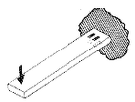
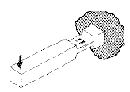
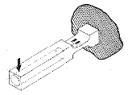
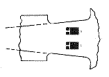

Strain Gage Based Transducers reference
The simplest (but not generally the best) beam configuration for a bending transducer is the basic cantilever beam, shown below in Fig. A. Pairs of longitudinally aligned strain gages are mounted on the upper and lower surfaces, near the root of the beam. Although low in manufacturing cost, and convenient for strain gage installation, this type of spring element embodies a number of shortcomings with respect to the preceding list of preferred design characteristics. As described in the later, some of the deficiencies can be overcome by design refinements, but others are fundamental to the cantilever configuration.

Fig. A
In a cantilever spring element, the only useful function served by most of the beam length is to convert the applied load into a bending moment in the gage area. At the same time, however, this portion of the beam length contributes significantly to the deflection at the point of load application, and to the mass subjected to displacement. As a result, the spring element tends to be low in natural frequency. The design can be improved somewhat by concentrating the deformation largely in the gage area, as shown in Fig. B.

Fig. B
For the same strain level in the gage area, the deflection is now much lower, but the mass has been increased. Further improvement can be gained by decreasing the mass of the beam extension; and this can be accomplished, for example, by making the beam extension hollow as in Fig. C. The use of aluminum alloy instead of steel for the beam material will also result in lower deflection and higher natural frequency for a beam of the same width and length, exhibiting the same strain level in the gage area.

Fig. C
With the foregoing design changes, the simple cantilever spring element has gotten noticeably less simple - and more expensive to fabricate. Unfortunately, it is still lacking in some of the desirable attributes of an optimum spring element. Because the displacement path at the point of load application is curvilinear, the point moves laterally as it deflects. Also, under these conditions, the load is no longer applied in a direction perpendicular to the beam axis. Unless these effects are eliminated or compensated for, both will tend to limit the ultimate accuracy and linearity of the transducer.
Another undesirable feature of the design as we now have it is that the strain distribution is not uniform over the grid length of the strain gage. The strain is highest toward the fixed end of the beam, and decreases linearly along the gage length. This effect is most prominent in short beams, since the strain gradient varies inversely with the beam length. We can overcome this deficiency by introducing still another design refinement - i.e., by varying the beam width in the gage area to form a constant-stress beam. The constant-stress condition can be obtained most easily by linearly tapering the sides of the beam as shown in the plan view, Fig. D. For this to achieve the desired result, incidentally, the projected extensions of the two tapered sides must meet at the point of load application.

Fig. D